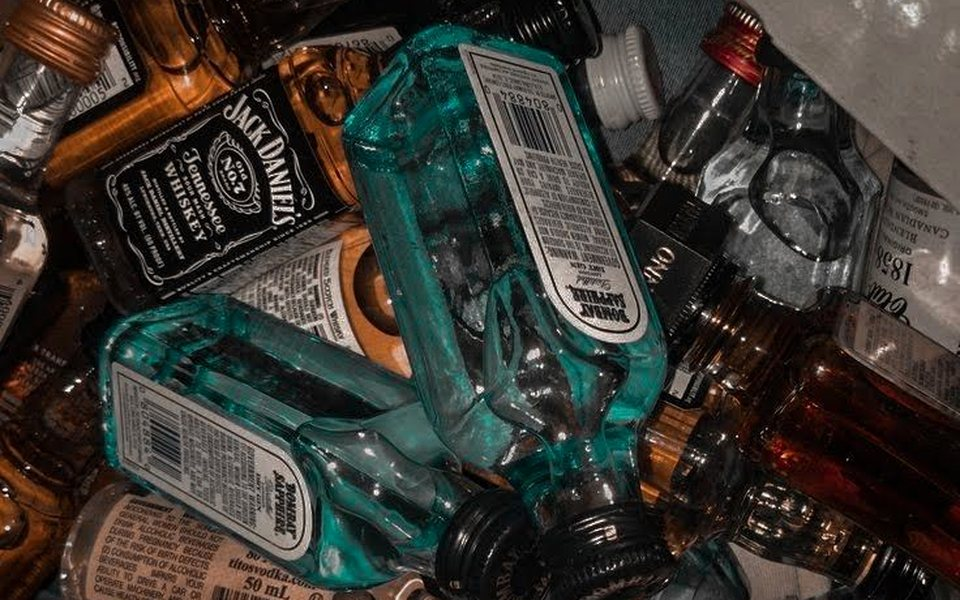

En uno mismo
- Beber más de lo planeado o no poder parar una vez que se empieza.
- Necesitar cada vez más alcohol para sentir el mismo efecto.
- Lagunas: no recordar lo que pasó mientras se bebía.
- Sentirse mal, ansioso o irritable cuando no se bebe.
Desde afuera
- Caída de calificaciones, faltas o abandono de actividades que antes gustaban.
- Cambios de amistades, secretismo, mentiras sobre el consumo.
- Cambios bruscos de humor, agresividad o aislamiento.
- Problemas con la ley, accidentes o peleas relacionadas con beber.